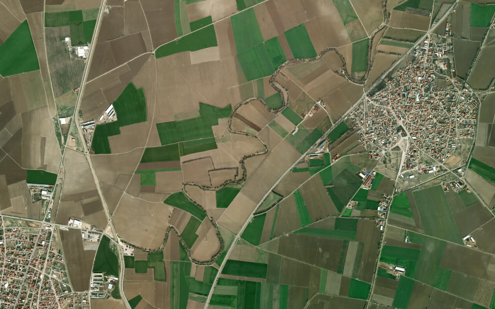
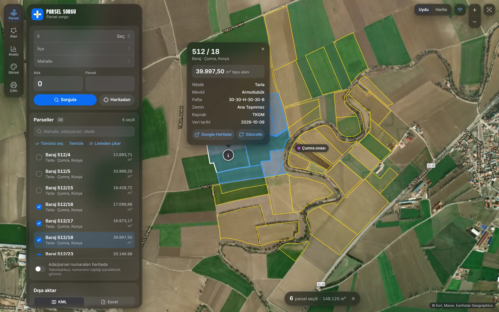
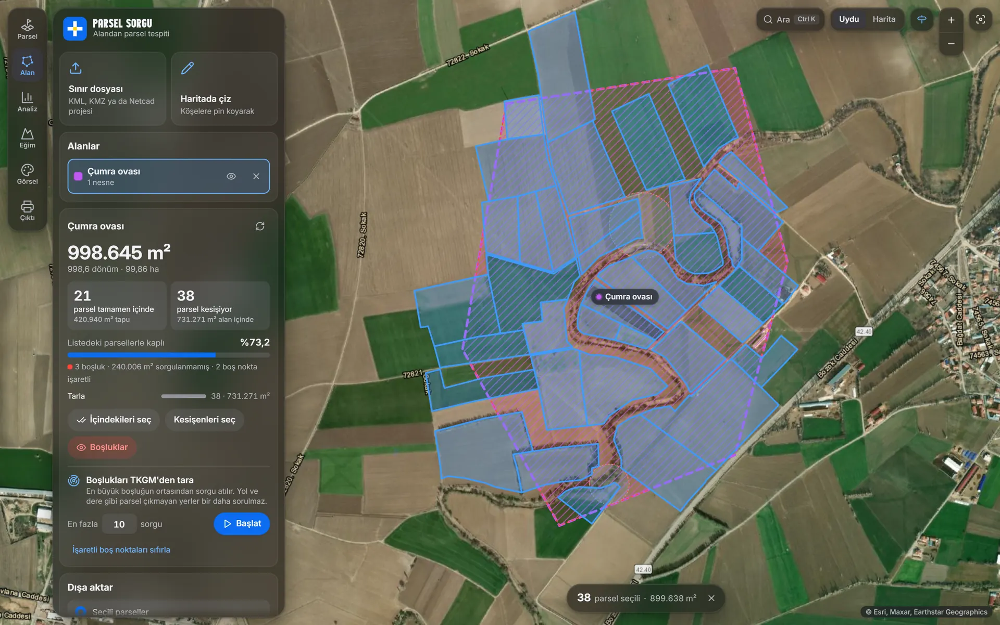
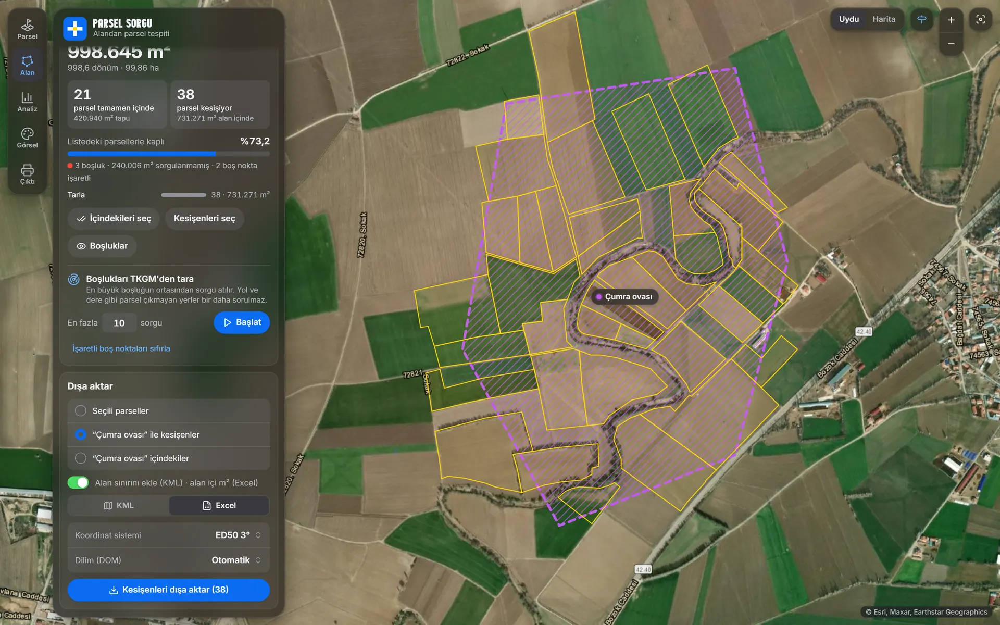
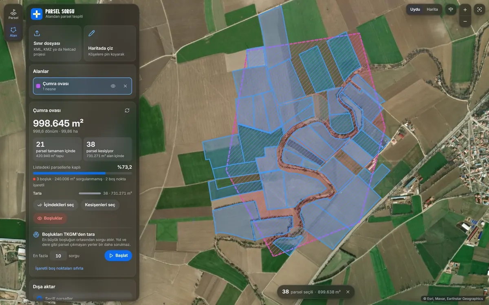
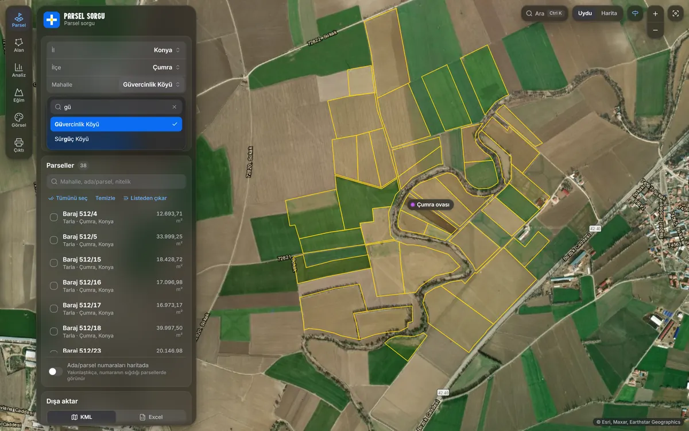
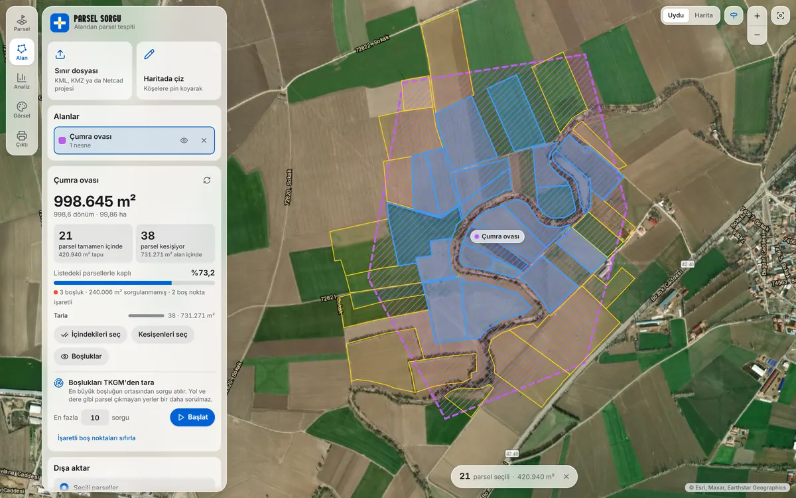
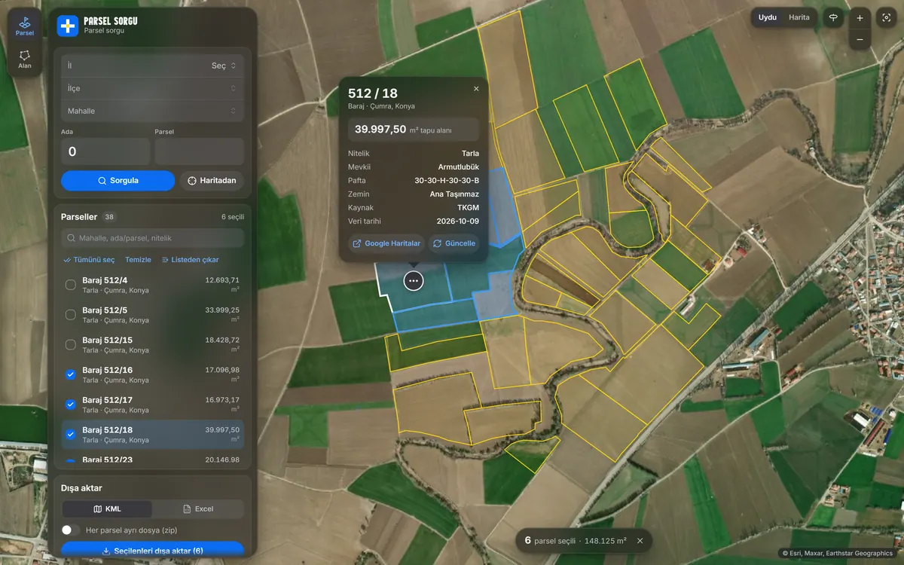
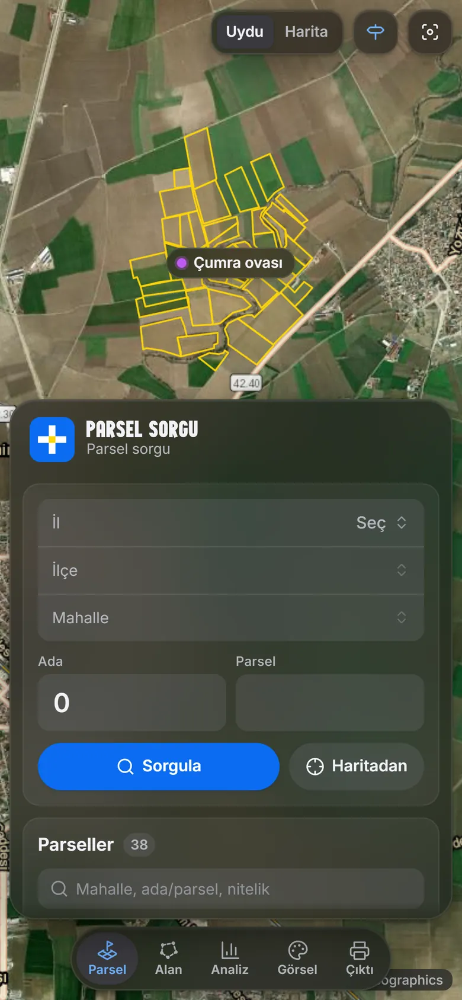

Herkesin limiti kendine
Sorgular senin bilgisayarından, senin internetinden TKGM'ye gider. İş arkadaşının sorgusu senin limitinden düşmez.

TKGM parselleri haritada, tablo elinde. Ada/parsel sorgula, alanı çiz, içindeki parselleri bul; KML ve Excel'e aktar.
Ücretsiz · Açık kaynak · v0.1.0
Uydu görüntüsü: Esri, Maxar, Earthstar Geographics
Ada. Parsel. Sınır. Tek ekranda.


01 · Sorgula
İl, ilçe ve mahalleyi yazarak seç, ada ve parseli gir. Ya da haritada parsele tıkla. Tapu alanı, nitelik, mevkii ve pafta tek kartta.
Sorgulanan her parsel bilgisayarında saklanır: aynı parsel için TKGM'ye ikinci kez gidilmez, günlük limitin boşa gitmez.

02 · Alandan tespit
OSB ya da plan sınırını yükle (KML, KMZ, Netcad projesi) veya haritada pinlerle çiz. İçindekileri ve kesişenleri tek tıkla seç, boşlukları gör; sorgu bütçesiyle TKGM'den otomatik tara.
Bu ekrandaki 38 parselin hepsi, çizilen alandan 40 sorguyla otomatik bulundu.


03 · Dışa aktar
KML ile Google Earth'e, Excel ile tabloya. Köşe koordinatları ITRF96 3° ya da ED50 3°; dilim otomatik ya da elle.
Alan sınırı KML'e, alan içi metrekareler Excel'e eklenir. İstersen her parsel ayrı dosya.





Nasıl çalışır
Sorgular senin bilgisayarından, senin internetinden TKGM'ye gider. İş arkadaşının sorgusu senin limitinden düşmez.
Sorguladığın her parsel saklanır. Aynı parseli yine aradığında ya da haritada içine tıkladığında sorgu harcanmaz.
Parseller ve alanların yalnızca bilgisayarında durur; hiçbir sunucuya gönderilmez. Hesap, kayıt, abonelik yok.
Kodun tamamı GitHub'da. Alan Yöneticisi ve parselsorgu KML'leri, fav_list.json dosyaları içe aktarılır.
Windows 10 / 11 · Chrome ya da Edge · İnternet bağlantısı
Kurulum dosyasını indir v0.1.0Hayır. Ücretsiz ve açık kaynak; hesap ya da kayıt gerekmez.
Uygulama “Limit doldu” der. Daha önce sorguladığın parseller önbellekten gelmeye devam eder; yeni sorgular ertesi gün açılır. Limit her kullanıcının kendi bağlantısına göredir.
Tapu alanı TKGM'nin verdiği değerdir; uygulama onu hesaplamaz. Alan içi metrekare gibi hesaplar parsel sınırlarından yapılır ve yaklaşıktır. TKGM koordinatları yaklaşık 1 m hassasiyettedir; ED50 dönüşümü yaklaşık ±2 m'dir.
Yalnızca kendi bilgisayarında: %LOCALAPPDATA%\ParselSorguPlus. Uygulama hiçbir sunucuya veri göndermez; sadece TKGM'ye sorgu atar.
Kurulum dosyası henüz dijital olarak imzalı olmadığı için SmartScreen uyarı verebilir. Ek bilgi → Yine de çalıştır ile devam edebilirsin. Dosya, GitHub'daki açık kaynak koddan GitHub'ın kendi sunucularında derlenir.
Kurulum paketi şimdilik yalnızca Windows için. Python yüklü her bilgisayarda kaynak koddan çalıştırılabilir; adımlar GitHub sayfasında.
Hayır, resmi bir uygulama değildir ve TKGM ile bağlantısı yoktur. Parsel verileri Tapu ve Kadastro Genel Müdürlüğü'ne aittir; uygulama, parselsorgu sitesinin kullandığı herkese açık servisi kullanır.